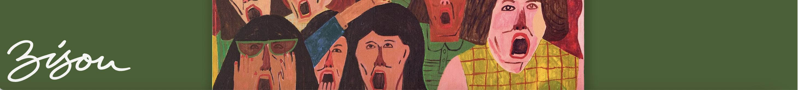

Ustalenia — strona Ewy Dąbrowskiej
Wersja 2 · 14 listopada 2026 · zaktualizowana po Twoich komentarzach
Dziękuję za odpowiedzi! Poniżej zebrałem wszystko, co ustaliliśmy, oraz kilka rzeczy, które jeszcze
zostały do decyzji. Wstępny projekt strony przygotuję po angielsku — wersję polską dodam pod koniec prac
(przełącznik języków będzie dostępny).
✓ustalone
✕rezygnujemy
+nowy pomysł z Twoich komentarzy
?do decyzji / potrzebuję od Ciebie
W skrócie
Ustalone
- Cele strony i odbiorcy — wszystkie propozycje
- Dwa główne przyciski: „Zobacz realizacje” i „Kontakt”
- Kontakt: widoczny adres e-mail (+ formularz)
- Menu: Work, Gdzie zobaczyć, Exhibitions, Film/Performance, Publications/Press, About, Contact
- Strona główna: wybrane projekty, o Tobie, logotypy instytucji
Nowe
- „Gdzie zobaczyć moje prace” — mapa prac w Polsce i Europie (pkt 4)
Rezygnujemy
- Newsletter, News / belka „Nowości”, sekcja „Featured”, Creative Process, podział wystaw na nadchodzące i archiwalne
Wciąż do decyzji
- Inspiracje (pkt 1), wybór i kolejność projektów (pkt 7), logo (pkt 8)
1. Punkt wyjścia do decyzji
Jeśli widziałaś kiedyś stronę — niekoniecznie o identycznej tematyce — która Ci się spodobała, chętnie ją zobaczę.
Może to być jakiś szczegół, który przyciągnął Twoją uwagę, ogólny styl, kolorystyka czy ulubiony font.
Wystarczy link albo zrzut ekranu z krótkim dopiskiem, co Ci się w niej podoba.
2. Cel strony ustalone
Główne cele
- Wizytówka uwiarygadniająca portfolio przed profesjonalistami i instytucjami
- Wirtualna galeria ułatwiająca zdobywanie nowych współprac
- Zwiększanie rozpoznawalności, uwiarygodnienie i ugruntowanie marki własnej
Cele wspierające
- Baza dla mediów
- Cyfrowe archiwum sztuki efemerycznej
- Możliwość pozyskania mniejszych projektów typu warsztaty, spotkania z lokalną społecznością
3. Odbiorcy docelowi i poboczni ustalone
Odbiorcy docelowi
- Instytucje publiczne, fundacje kulturalne, samorządy, kuratorzy sztuki, organizatorzy festiwali, instytucje grantowe —
w skrócie jedna persona: osoby decyzyjne z budżetem (kuratorzy, urzędnicy, dyrektorzy instytucji kultury, architekci krajobrazu)
Odbiorcy poboczni
- Dziennikarze / krytycy sztuki
- Widzowie / szeroki odbiorca
- Klienci prywatni / właściciele ogrodów
- Edukatorzy, studenci, domy kultury
- Inni artyści i rzemieślnicy
4. Główny „Call to Action” strony ustalone nowy pomysł
- „Zobacz realizacje” i „Kontakt” — dwa równorzędne, główne przyciski. „Szeroki odbiorca” pójdzie oglądać zdjęcia,
a osoba szukająca współpracy od razu przejdzie do kontaktu.
- Kup, Zapytaj o współpracę, Napisz do mnie, Zobacz terminy — rezygnujemy.
- „Gdzie zobaczyć moje prace” — trzeci, dodatkowy przycisk (Twój pomysł, szczegóły poniżej).
Propozycja: „Gdzie zobaczyć moje prace”
„Po naciśnięciu mogłyby się wyświetlać zdjęcia rzeźby i potem lokalizacja lub od razu otwierać mapka Google
z lokalizacją pracy. Wiele prac, przede wszystkim te land-artowe, są rozproszone w różnych miejscach w Polsce i w Europie.”
Proponuję połączyć oba warianty:
- Osobna podstrona z mapą (robocza nazwa: Where to see) — mapa Polski i Europy z zaznaczonymi pracami.
Kliknięcie w punkt pokazuje zdjęcie pracy, tytuł, rok i miejsce oraz przycisk „Otwórz w Mapach Google”,
który od razu prowadzi do nawigacji.
- Lista pod mapą — te same prace pogrupowane wg miejsc (wygodniejsze na telefonie i dla osób, które wolą przewijać zdjęcia niż mapę).
- Na podstronie każdego projektu — krótki blok „Gdzie zobaczyć” z miejscem i linkiem do Map Google.
- Na stronie głównej — przycisk „Gdzie zobaczyć moje prace” obok dwóch głównych, ale wizualnie spokojniejszy,
żeby nie konkurował z „Zobacz realizacje” i „Kontakt”.
Do ustalenia przy mapie:
- Które prace można dziś zobaczyć na żywo? Prace efemeryczne, których już nie ma, proponuję pominąć na mapie
(zostają w Work jako archiwum) — albo oznaczyć je inaczej, jako „miejsce, w którym powstała praca”. Która opcja Ci odpowiada?
- Dokładne lokalizacje: najprościej wkleić mi link z Map Google do każdej pracy (albo adres / nazwę miejsca).
- Prace w prywatnych ogrodach lub miejscach niedostępnych publicznie — pokazujemy je, przybliżamy lokalizację tylko do miejscowości, czy pomijamy?
5. Kontakt ustalone
- Adres e-mail widoczny na stronie — główny sposób kontaktu: na podstronie Contact i w stopce każdej strony
(kliknięcie otwiera program pocztowy).
- Formularz kontaktowy na podstronie Contact jako uzupełnienie — dla osób, które wolą napisać od razu ze strony.
Jeśli wolisz zostawić sam adres e-mail, bez formularza — daj znać.
- Numer telefonu — nie publikujemy.
- Newsletter — rezygnujemy.
- Potwierdź proszę adres e-mail, który ma się pojawić na stronie.
6. Podział strony ustalone
Strona główna (homepage)
- Wybrane projekty — w formie skróconej, z przyciskami kierującymi do podstron tych projektów
- Trochę informacji o Tobie
- Logotypy organizacji / instytucji publicznych / fundacji / firm, z którymi współpracowałaś — wybierzesz, które pokazać,
z listy „Wybrane realizacje i projekty” w portfolio
- Przyciski: „Zobacz realizacje”, „Kontakt” i „Gdzie zobaczyć moje prace” (pkt 4)
- Belka „Nowości” — nowości byłyby aktualizowane rzadko, a nieaktualna belka działa na niekorzyść strony
- Sekcja typu „Featured”
Podstrony w górnym menu (nazwy robocze, po angielsku)
| Podstrona | Co zawiera |
|---|
| Work | Lista wszystkich projektów; z niej przechodzi się do podstron projektów |
| Where to see nowa | Mapa prac w Polsce i Europie + lista miejsc (pkt 4) |
| Exhibitions | Jedna wspólna lista wystaw, od najnowszych — bez podziału na nadchodzące, aktualne i archiwalne |
| Film / Performance | Filmy i zapisy performansów osadzone z YouTube |
| Publications / Press | Publikacje i materiały prasowe |
| About | Zdjęcie i bio |
| Contact | Adres e-mail + formularz kontaktowy |
Siedem pozycji to sporo jak na górny pasek — na telefonie menu będzie rozwijane, a na komputerze dobiorę układ tak,
żeby pasek pozostał lekki. Kolejność w menu mogę jeszcze zmienić, gdy zobaczysz projekt.
Rezygnujemy z podstron
- News — Nowości / Co nowego
- Creative Process — opowieść o procesie twórczym
Podstrony projektów
- Dostępne z listy projektów na podstronie Work i z wybranych projektów na stronie głównej.
Każda będzie miała też blok „Gdzie zobaczyć” (jeśli praca jest dostępna do obejrzenia).
7. Struktura prezentacji projektów do decyzji
- Strona główna: które projekty (3–5) i w jakiej kolejności mają się na niej pojawić?
- Pełna lista projektów na podstronie Work — kolejność wyświetlania, do wyboru:
- chronologicznie (od najnowszych)
- w kolejności prezentowanej w portfolio
- wg własnego uznania — bez sztywnej reguły, ustalane ręcznie
Jeśli nie masz preferencji, proponuję kolejność wg własnego uznania — najmocniejsze prace na początku,
a rok przy każdym projekcie i tak będzie widoczny.
8. Logo do decyzji
Logo strony w górnym pasku nawigacyjnym, propozycje:
- „Imię i Nazwisko” pisane ładnym fontem lub pisane ręcznie, typu:

- znak wizualny / logo — coś nietypowego + „Ewa Dąbrowska” obok:
- mogą to być inicjały ED, które po najechaniu będą się rozwijały w pełne imię i nazwisko,
- coś naszkicowanego na szybko, oddającego charakter działalności,
- abstrakcyjny prosty kształt.
Logo może być na tyle ciekawe, że mógłbym je użyć jako motyw przewodni strony — coś, co będzie się pojawiało
w różnych formach podczas przeglądania strony. Który kierunek jest Ci najbliższy? Jeśli masz własny podpis lub szkic,
który chciałabyś wykorzystać, chętnie go zobaczę.
Czego jeszcze potrzebuję od Ciebie
- Linki lub zrzuty ekranu stron, które Ci się podobają (pkt 1).
- Wybór 3–5 projektów na stronę główną i kolejność projektów na podstronie Work (pkt 7).
- Kierunek logo (pkt 8).
- Do mapy: lista prac, które można zobaczyć, z linkiem do Map Google lub adresem, oraz decyzja w sprawie prac efemerycznych i prywatnych lokalizacji (pkt 4).
- Potwierdzenie adresu e-mail do kontaktu (pkt 5).
- Logotypy instytucji, które chcesz pokazać na stronie głównej (pkt 6).
- Linki do filmów na YouTube do podstrony Film / Performance (pkt 6).